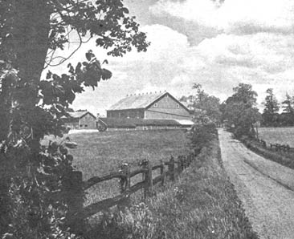
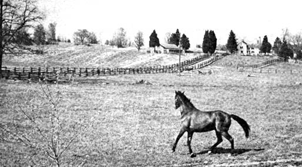

Although locating a suitable homestead and obtaining reasonable purchase arrangements may seem difficult, it definitely is possible for almost anyone with a little cash and a steady income to buy a farm today. If you can scrape up enough bread for a down payment, this article should help you find a farm you can afford and arrange a mortgage that you can handle.
Practically all available farmland and land suitable for farming in this country is privately owned. Little government homestead land left in the continental United States is suitable for farming. The few small tracts of public land available from time to time are mostly located in the semi-arid western states and it requires an immense effort and considerable resources to make such acreage pay. The absence of farm buildings, a house, available water, tillable soil and utilities raises many questions about the practicality of such a venture. It's better to consider buying an inexpensive existing farm in a remote area before exploring the purchase of public land.
But, if you're dead-set on homesteading, buying or leasing government land-or if you've located a tract suitable for farming-write to the Bureau of Land Management, Department of the Interior, Washington, D. C. 20240. The lease or purchase of public land is authorized by the Public Sale Act of 1964; Public Law 88-608; 78 STAT 988. Homesteads are granted following a personal inspection of the land provided that the tract has been classified as suitable for farming by the Bureau of Land Management. Remember, though, you'll need cash to build a shelter and develop even the free land.
New land suitable for farming may be developed by improved drainage, irrigation or reclamation projects conducted by the Bureau of Reclamation, U.S. Department of the Interior. Such land is often sold immediately (Usually to large "development" corporations that have an inside pipeline to the most desirable chunks of property if the large holdings recently opened in coastal North Carolina, Louisiana and other states are any indication-JS). When private land affected by reclamation projects is offered for sale, the project manager should be consulted to determine whether or not such land will actually benefit by the project.
There is much land suitable for homesteads in Alaska but, until the federal government settles all existing claims against it by the natives of that state (this settlement is to be made early in 1971), new homestead grants are being withheld. Further information about public land in Alaska may be obtained from the Bureau of Land Management, Department of the Interior, Washington, D. C. 20240; Manager, Land Office, Anchorage, Alaska 99501; or Manager, Land Office, Fairbanks, Alaska 99701.
The vast majority of farms and farm tracts purchased in the United States are bought from private owners and are usually financed by mortgages. The acreage is usually located through advertisements in small area newspapers, major Sunday papers, shopping guides, farm journals and farm real estate listings.
Again, in case you're interested, there is private land in Alaska available for sale or lease. To obtain information about climate, farming conditions and markets for produce in the areas that interest you, write to Director, Alaska Agricultural Experiment Station, Palmer, Alaska 99645.
When you've selected the part of the country where you'd like to settle, you're ready to begin the search for that "perfect" farm. It's not really necessary to limit your choice to an economically depressed or underdeveloped area, either. Although prices are generally much lower in some sections of the country (such as the Ozarks) than others, you can still find a good farm at a reasonable figure almost anywhere. Land values are skyrocketing around Cleveland, for instance, yet-a few weeks ago-I saw a good 31-acre farm for $11,000 . . . and it was within an hour's drive of that city's downtown area. Bargains such as this can be found if you consider a few important points when looking for a farm.
The first fact to consider is that the farther you are from a major city or suburban development, the less costly land should be. Acreage near freeway interchanges, expressways and important highways is generally more expensive than less accessible land. There is little point in paying for valuable frontage property if you intend to use it for growing vegetables. If you want your homestead to remain a homestead, try to locate it in the least likely path of future suburban sprawl . . . probably at the maximum economical distance from your job, business or market area.
Second, if you're trying to hold the cost of your land down to a bargain level, you should not buy any more land than you can reasonably or economically use. A small family or parttime farm need be no larger than fifty acres. Even this is stretching it for practical purposes. A one-acre garden, well planned, can produce enough food for two families. One cow will give from 10 to 20 quarts of milk per day. Thousands of families have established abundant homesteads on five acres or less. There is little point in passing up a nice little farm just to obtain a lot of acreage. A little thirty-acre homestead-too small to farm profitably in a "traditional" manner-can supply your basic needs and keep the suburbs from your back door. A small outside income or-possibly-ten acres of organically grown produce for the increasing market will bring home the "extras" that you might desire.
Third, avoid paying for prime farmland in locations known as "fruit belts". Unless you intend to specialize in certain fruit crops there is little reason to purchase land in such regions. Available orchards and vineyards in my area (40 miles east of Cleveland) are priced absurdly high regardless of their condition or age. Even the nearby farms that have no orchards or grapes are unreasonably expensive due to local conditions that are favorable for growing those fruits. A new interstate highway through our area directly into Cleveland has also boosted land costs.
Fourth, you will soon discover that "wild land", overgrown with weeds and unused for years, can be much richer and, probably, less expensive than land which is currently in production. Even when crops are properly rotated, they must be hyped with chemical fertilizers to meet today's demands for record yields. As far as the land is concerned, this pushing does little more than further deplete the soil. Corn crops especially rob the earth of many precious nutrients which are riot readily restored. Wild land which has not been drained by cash crops and which-to boot-is probably less expensive can, therefore, be a double bargain. It may well contain more nutrients than "developed" soil and subsequent plantings by proper organic methods can maintain and even increase this natural wealth.
Don't pass up rolling countryside or hillside acreage. Those Appalachian farmsteads are not only beautifully scenic and remote . . . the land is generally excellent for gardening. Most of this soil has been avoided by commercial and large farming operations, is quite rich and-as long as there is any heavy wild annual growth to prevent erosion-you can garden in strips across the slope. Hillside farms have other advantages: They often sell for as little as $20 an acre; excess water never gets a chance to stand around long enough to rot crops; frost problems are less serious because currents flowing down the slopes on cold nights prevent the development of pockets of stable cold air. Besides, who ever found a hillside to be an obstacle for goats?
Finally, the cost of labor and materials being what it is today (not even considering inferior workmanship), one is well advised to purchase a farm with existing buildings . . . even if some repairs are needed. If you take the time to look, you're almost sure to find a tract of reasonably priced land with a house and some decent buildings thrown in "for free".
Once you've located your homestead, there are a number of ways to arrange financing. If you know what they are, you can ,save yourself a sizeable sum on interest rates, your payments can be substantially less and you can avoid the usual finder's fee by arranging your own mortgage. Here's what is generally available:
LIFE INSURANCE COMPANIES have broad investment powers and are often the best bet for financing an off-beat real estate transaction. Some of the smaller concerns deal almost exclusively with residential mortgages and the little private and fraternal insurance companies can lend at an extremely low interest rate. American Mutual Life Association of Cleveland, for instance, now makes loans at 6% to its members which isn't bad in today's market of 8 1/2%. These small companies seldom require the payment of discounts or "points".
SAVINGS AND LOAN ASSOCIATIONS are the major source of mortgage funds for residential purchases. The usual loan limits are $40,000 with a maximum loan-to-value ratio of 90% and an average of 70%. However, since farmland is often bought at less than its appraised value on today's market and since it is possible to obtain maximum loans on exceptionally good purchases, you might finance your acreage with virtually no out-of-pocket cash through a S & L:
I bought a suburban home through a Savings and Loan bank. It was willing to finance the entire selling price so that I only had to pay the closing costs . . . which were less than the security deposit I would have had to make on an apartment. The market value of my home has now increased enough to finance the down payment for a farm when I sell.
The new FEDERAL HOME LOAN MORTGAGE CORPORATION has been set up to purchase both conventional and government mortgages with greater flexibility than in the past and to increase the supply of money available for home mortgages. Conventional financing has been encouraged to provide for lower down payments, longer payoff periods and lower monthly payments-particularly for low and middle-income families. Authoritative sources indicate that new laws enacted by congress should provide for even more federally subsidized housing at lower interest rates during the next few years.
The FARMERS HOME ADMINISTRATION Farm Ownership Program currently makes 40-year loans at 5% interest for the purchase, enlargement or development of farms no larger than family farms for persons unable to obtain required credit elsewhere. Maximum loan plus debts against the farm cannot exceed $60,000. To qualify, you must be certified by the local County Farmers Home Administration as qualified to farm. "Qualified" usually means that you have had farm experience. Veterans are given preferential treatment. Once you have enough equity in your farm through full-time operation, you are expected to refinance through a conventional mortgage.
The Farmers Home Administration also makes loans for the purchase of small farms if the applicant is considered eligible and has dependable off-farm income. The applicant must plan to continue farming part-time. If rural housing is desired, any individual who is unable to obtain sufficient credit elsewhere may qualify for a mortgage loan. For further specific information, contact the local Farmers Home Administration office in your county seat town or write to the Farmers Home Administration, Department of Agriculture, Washington, D. C 20250.
FEDERAL LAND BANKS make long-term farm mortgages through 700 local Federal Land Banks and their associates (This is how the family farm back in Indiana was financed-JS). The Land Banks and associations are owned cooperatively by their member borrowers. Funds are obtained from the investing public through the sale of Federal farm loan bonds. First mortgage loans are arranged for persons who are-or will be-engaged in farming and who will derive a principal part of their income from farming. For more details, contact the Farm Credit Administration, Washington, D.C. 20578 or a local Federal Land Bank or association.
INDIVIDUAL LENDERS who are willing to make greater risk loans than a lending institution will handle are to be found in almost any community. These individuals usually prefer short term loans and charge a higher rate of interest. They may be a last alternative for a hard-to-finance deal.
PURCHASE MONEY MORTGAGES are another alternative to usual financing sometimes used by real estate dealers during periods of tight money. A seller to (1) get his price and (2) save a considerable amount in taxes [as long as he receives no more than 30% of the sale price during the year of the sale] will sometimes "carry the paper" when sufficient loan money is not otherwise available.
A SECOND MORTGAGE can often be arranged on the difference between the loan value on a property and the actual asking price. If the seller has sufficient credit to arrange a ventional mortgage he can finance the balance through a second mortgage on the same terms as the first mortgage (and he may ask for a percentage from the buyer for arranging the deal). The buyer may have the right to prepay on the second mortgage and the seller can sell the second mortgage to a third party at a discount. By "inflating" the sale price, the seller can make up any loss he might realize on a discount.
LAND CONTRACTS should be considered when there is little money for a down payment but funds may be available in the future for larger payments. Through a standard land contract agreement one can arrange an installment purchase. The seller may obtain the balance of the sale price over the existing mortgage by pledging his own credit for a loan with the land contract as security. The buyer assumes the existing mortgage payment plus payments due under the seller's loan. The seller retains title and is covered in case of default by the buyer. Seller may also stipulate that all installment payments may be liquidated if the buyer defaults. In this manner, land contracts are encouraged without the risk of complicated foreclosure proceedings following default. The FHA does not insure installment sales but will continue to insure any existing FHA mortgage even though an installment purchase has been made. Once the buyer is able to refinance the total debt with an outside mortgage, he obtains title from the seller.
A TRADE-IN or a swap may be arranged if you already have property. Such arrangements are common and can be beneficial to all parties, especially during periods of tight money. On occasion, you may find a farm widow or widower who wants to move to the suburbs or the city. Any difference in costs can be managed by a second mortgage payment.
Alternatives to individual ownership ought to be considered if resources and credit are limited. Several individuals may join together to purchase land that they couldn't obtain otherwise. Several joint arrangements may be considered:
JOINT TENANCY: Two or more individuals have the same ownership interest in a single parcel. In a joint tenancy agreement each owns all, with the right of survivorship. This arrangement seems best for tribes or communes, especially when one individual pays more than his share in costs, in which case he may take a full deduction on taxes.
TENANCY IN COMMON: Two or more individuals each with the same right to possession and benefits according to his share of ownership. There are no rights of survivorship. A tax liability arises when one tenant pays more than his share of costs.
Although PARTNERSHIPS are the most common form of unincorporated arrangement and offer certain business advantages, they are least desirable as an alternative to purchasing a hip farmstead. Various tax factors and other considerations affect the partnership to creat a good possibility for future hassles between partners. The Treasury Department carefully scrutinizes partnerships to insure that they are not set up as corporations.
An interesting federal program that appears to offer promise for any joint ownership consideration is in the National Housing Act's Public Law 73-479, Section 213. This provides for technical advice and assistance from the Federal Housing Administration in planning, organizing, developing, constructing and operating cooperative housing for five or more dwelling units. This program may be used to finance a communal venture and may provide an excellent way to finance building on inexpensive land when little cash is available. Loans are available for up to 97% of the estimated value of property for continued use as a cooperative. According to one source, mortgage limits are $9,000 per family unit without a bedroom; $12,500 per family unit with one bedroom; $15,000 per family unit with two bedrooms; $18,500 per family unit with three bedrooms and $21,000 per family unit with four or more bedrooms. Maximum mortgage maturity is 40 years.
To qualify for the National Housing Act program, one must form a nonprofit cooperative ownership housing corporation or a nonprofit cooperative ownership housing trust. Permanent occupancy of the dwellings is restricted to the members or beneficiaries of the corporation or trust. The mortgage must cover the properties of the corporation or trust.
For further information, specific details and/or advice, contact the Federal Housing Administration, Department of Housing and Urban Development, Washington, D. C. 20411 or any of its regional offices (New York, Philadelphia, Atlanta, Chicago, Ft. Worth, San Francisco and San Juan, Puerto Rico).
Section 233 of the same law authorizes the FHA to insure mortgages on properties where advanced technical housing design, materials and construction or experimental neighborhood design produce a significant reduction in costs or improve quality. Although the FHA has traditionally fostered conventional construction methods (often inferior in quality and workmanship) the terminology in this law may provide the basis for a pilot project you might develop on your own land. It is certainly worth exploring.
Under FHA's Section 203 (i) program of mortgage insurance for homes in outlying areas, a home buyer must make a down payment of 3%. On the old maximum ceiling of $13,500, the down payment on such a loan would be only $405.
Several additional FEDERAL ASSISTANCE programs are worth considering before rushing out to sign that mortgage contract. For a complete catalog of Federal Assistance programs write to the Office of Economic Opportunity, Washington, D. C. 20506.
Whatever you decide about mortgaging the purchase of your farm, it's a good idea to check back with MOTHER NO. 2, the Special Issue on finding and establishing a homestead, for some final tips before the deal is closed.
GOOD LUCK!
|
 |
 |
|